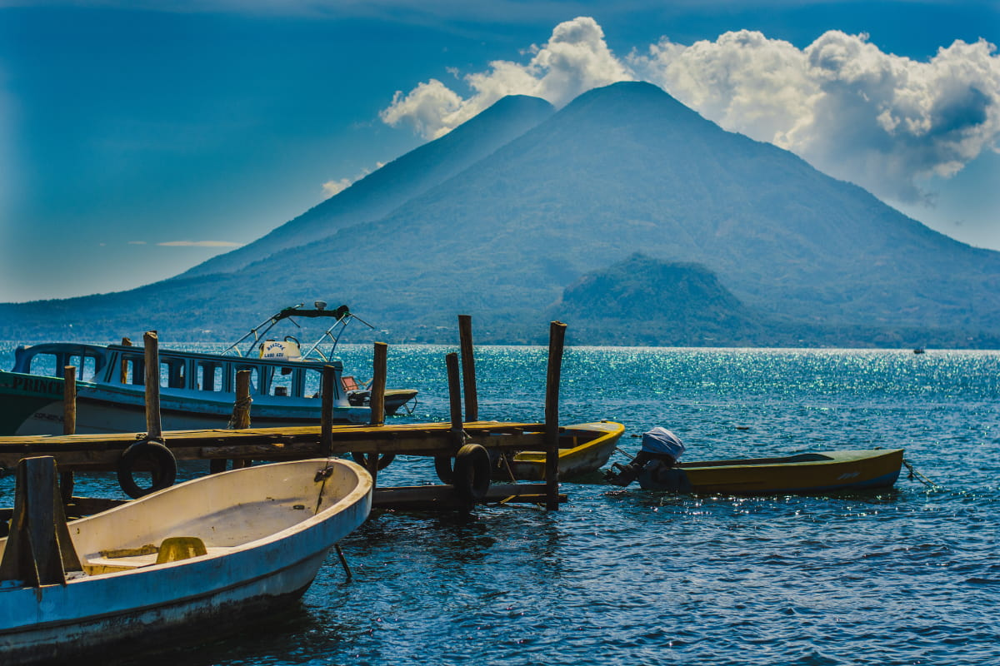

|  | ||||
| segun el pueblo al que quiera ir, tendran que ir a uno o otro de los embarcaderos, situados a ambas puntas de la misma calle. igual, son asequibles por la orilla del lago por si se quieren acortar el camino. bajando a cada embarcader, hay muchos puestos de vente}a de artresanias y demas cositas de recuerdos: no duden en negociar el precio | ||||